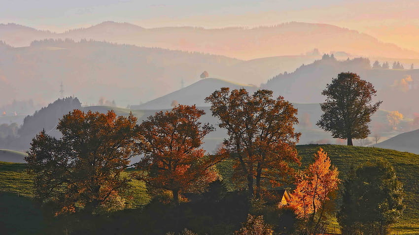
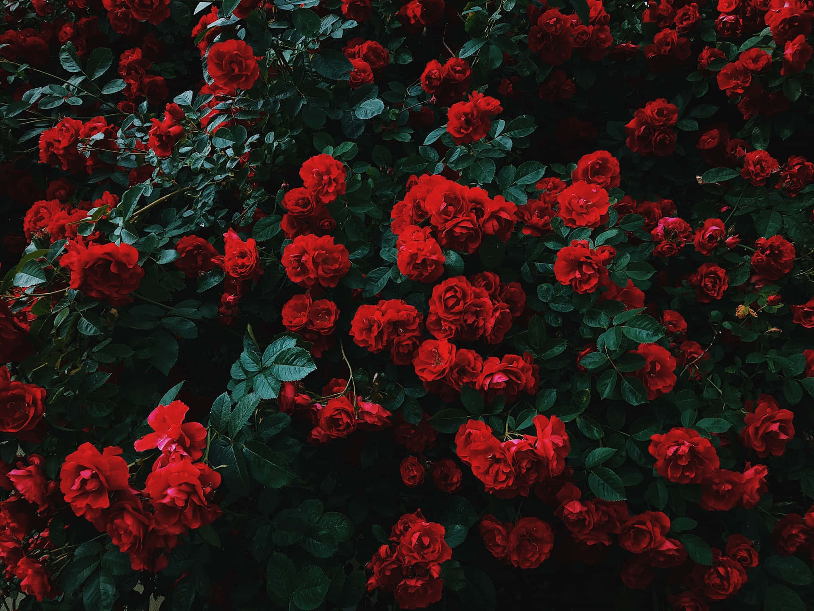

Bienvenido a Nature wiki:la enciclopedia viva
las plantas y el ambiente que nos rodea esta lleno de maravillas evolutivas y nativas de colombia no solo las planras renocidas nature wiki proporciona informacion sobre plantas que no todos saben su nombre, nature wiki no solo es una wikipedia de plantas o un diario de boticario es arte vivo